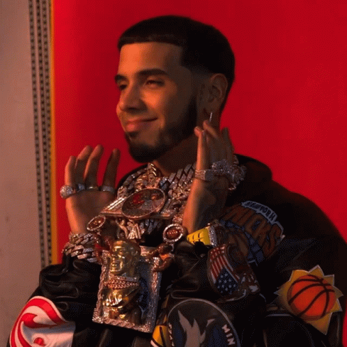

CANCIÓN DEL MOMENTO
La canción del momento se llama Luces tenues Anuel AA
La canción del momento se llama Luces tenues Anuel AA
Emmanuel Gazmey Santiago, conocido artísticamente como Anuel AA, es un cantante y compositor puertorriqueño nacido el 26 de noviembre de 1992 en Carolina, Puerto Rico. Es reconocido como uno de los pioneros del trap latino y ha tenido una carrera marcada por el éxito musical y controversias personales.
